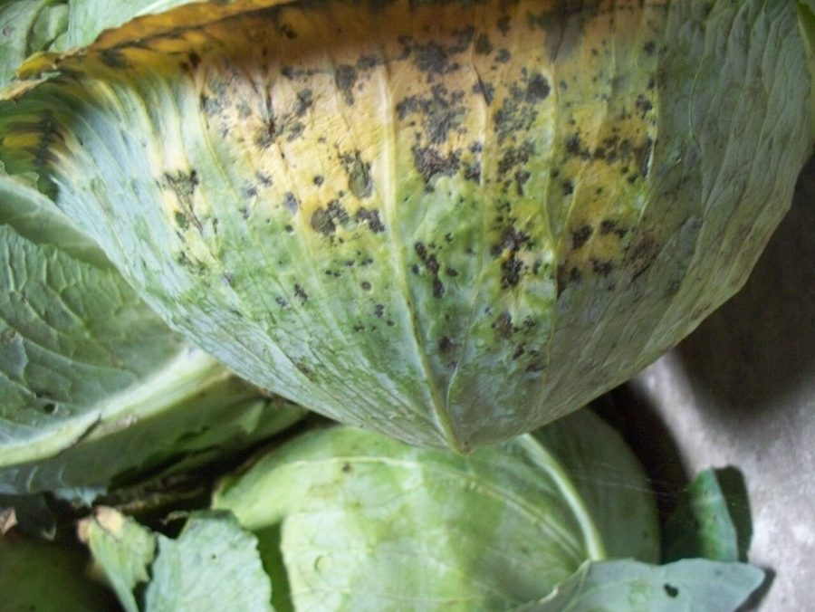

सरसों का झुलसाAlternaria Blight of Mustard
Alternaria brassicae · Pleosporaceae · FNG-0024

- Scientific nameवैज्ञानिक नाम
- Alternaria brassicae (Berk.) Sacc.
- Familyकुल
- Pleosporaceae
- Hindiहिंदी
- सरसों का झुलसा
- Local namesस्थानीय नाम
- sarson ka jhulsa, jhulsa, alternaria blight, alternaria, leaf blight
- Status hereयहाँ की स्थिति
- native
- Movementआवागमन
- Resident, here all year
- IUCNIUCN
- not evaluated
- Reviewसमीक्षा
- audited and independently read
When to look कब देखें
Expected mainly in November, December, January, February, March.मुख्यतः नवंबर, दिसंबर, जनवरी, फ़रवरी, मार्च में अपेक्षित।
सरसों का झुलसा / Alternaria Blight of Mustard
Alternaria brassicae (Berk.) Sacc. — Pleosporaceae
सरसों का झुलसा — सर्दी की सरसों की फसल की सबसे आम बीमारी। पत्तियों पर गहरे भूरे, गोल दाग़ आते हैं — बीच में सफेद रंग, किनारे काले। दाग़ बढ़ते जाते हैं, पत्ती सूख जाती है। पूरी पत्ती झुलस जाती है। दिसंबर-फरवरी को सबसे ज़्यादा नुकसान। बीज भी संक्रमित हो जाते हैं, अगली फसल के लिए बीज लेने वालों के लिए बड़ी समस्या। अच्छी किस्म चुनना और बीज का उपचार इसका समाधान है।
Quick Identification त्वरित पहचान
| Feature | Description |
|---|---|
| Leaf spots | Circular to irregular, dark brown; 3–10 mm diameter |
| Spot centre | Grey or white with concentric rings (target-board pattern) |
| Spot margin | Dark brown to black, sharply defined |
| Affected leaves | Yellow halo around spots; premature senescence (death) |
| Progression | Spots enlarge and merge; entire leaf browns and desiccates |
| Pod symptoms | Elongated brown lesions on pods; seeds may be blackened |
| Seed infection | Dark discolouration on seed coat; visible as grey or brown patches |
Field tip: Alternaria blight is identified by round brown spots with concentric rings (target pattern) on mustard leaves, appearing first on lower older leaves. The grey or white centre with dark margin is diagnostic. In December–February, inspect lower leaves of mustard plants; if spots have this pattern and cover >30% of leaf area, alternaria is present and management is needed.
हिंदी — कैसे पहचानें: गहरे भूरे गोल दाग़, बीच में सफेद। दाग़ एक के बाद एक। पुरानी पत्तियों पर पहले दिखते हैं।
Morphology and Symptomatology आकृति और लक्षण
Fungal structures (visible with microscope):
| Structure | Appearance |
|---|---|
| Conidiophore | Unbranched or sparsely branched; brown, septate; 50–100 µm long |
| Conidium (spore) | Obclavate (club-shaped); 20–80 × 8–15 µm; brown; with 4–8 transverse septa and 1–2 longitudinal septa; chains of spores form |
| Mycelium | Dark, septate; in infected leaf tissue and residue |
| Acervulus | Fruiting structure embedded in host tissue; bears spores in cushion-like mass |
| Pycnidium | Dark structure in seed coat; contains spores; primary source of seed-borne infection |
Disease progression:
- Infection source: Infected seed (high inoculum) or crop residue from previous season (low inoculum)
- Spore dispersal: Dry spores released from infected leaves; wind-borne; splash-dispersed in rain
- Entry: Spores land on leaf surface; germinate in presence of moisture and cool temperatures
- Colonization: Mycelium enters leaf through natural openings (stomata) or cuticle; colonizes mesophyll tissue
- Symptom development: 4–7 days after infection; brown spots appear; spots enlarge and coalesce
- Sporulation: Within 10–14 days, conidiophores emerge from stomata on leaf underside; spore chains are released in chains; visible as grey-brown coating on leaf underside
- Seed infection: At maturity, fungi penetrate into developing seeds through pod tissue; discolours seed coat; reduces seed viability
Disease stages:
- Early stage: Small scattered brown spots on lower, older leaves; minimal yield impact
- Advanced stage: Spots coalesce; multiple leaves affected; defoliation begins; significant yield loss (10–30%)
- Late-season observation: Seeds discoloured; germination and vigour reduced; farmer's seed unsuitable for next season
Life Cycle / Phenology जीवन चक्र
In eastern UP (mustard crop: September–March; disease peak December–February):
| Stage / Month | Event |
|---|---|
| July–August | Previous mustard crop residue in soil; Alternaria survives in seed and plant debris |
| September | Farmers sow mustard; if seed is infected (farmer-saved), primary inoculum is introduced; spores contaminating field soil germinate in moisture |
| October–November | Seedlings grow; no disease symptoms yet; conditions not yet ideal for fungal growth (still warm) |
| December | DISEASE ONSET — Cool, humid nights; dew formation; spore germination optimal; first leaf spots appear on lower leaves |
| December–February | ACTIVE DISEASE PERIOD — Temperature 15–20°C, high humidity, dew and light rain favor rapid progression; sporulation continuous; secondary spread through wind and splash |
| February–March | Pods mature; seed infection occurs; infected seeds blackened or grey; farmer considers this seed for next season's sowing (perpetuates disease) |
| March | Harvest; infected residue left in field or stored improperly; becomes source of inoculum for next crop |
Seasonality note: Alternaria blight is most severe in years with above-average post-monsoon rainfall and cool, humid conditions in December–February. Dry winters result in minimal disease.
हिंदी — जीवन चक्र: बीज से शुरू होता है। सर्दी में ठंडे-नम दिनों में फैलता है। पत्तियों को सड़ाता है। अंत में बीज को काला करता है।
Ecology and Substrate पारिस्थितिकी और आधार
Obligate plant pathogen: Alternaria brassicae requires living or freshly dead brassica tissue for infection and reproduction.
Temperature and humidity requirements:
- Optimal infection: 15–20°C, high humidity (>80%), free water on leaf surface (dew, light rain)
- Rapid sporulation: Cool nights, warm days, persistent dew; typical of December–February in eastern UP
- Stress to fungus: >25°C slows growth; low humidity (<60%) inhibits spore germination
- Survival: Fungus survives in infected seed, crop residue, and soil for several months; spores are wind-resistant
Host specificity: Primarily affects brassicas — mustard (Brassica juncea), rape (Brassica napus), cabbage, cauliflower; can occasionally infect turnip and radish, but Brassica juncea is the primary host.
Transmission:
- Primary (seed-borne): Infected seed is the major source; farmers saving seed from infected plants sow disease
- Secondary: Spores from crop residue in soil; wind dispersal from infected neighbouring fields; splash dispersal during rain
- Soil contamination: Less significant than seed-borne transmission; spores do not persist long in soil
Agricultural / Human Relevance कृषि प्रासंगिकता
Economic impact:
- Yield loss: 10–40% depending on disease severity and crop stage of infection
- Seed loss: 20–50% reduction in seed viability and germination in infected seeds
- Quality loss: Discoloured seeds are downgraded in price and unsuitable for seed-saving
- India context: Alternaria blight is endemic in mustard-growing regions; annual losses in Uttar Pradesh and Madhya Pradesh run into crores of rupees
Management — in order of priority:
- Disease-free seed (MOST EFFECTIVE):
- Certified seed source: Use certified mustard seed from recognized seed farms (ICAR-IARI, state seed agencies)
- Seed treatment: Hot water treatment (52°C for 30 minutes) kills seed-borne Alternaria; fungicide seed dressing (Thiram 2.5 g/kg seed) also effective
- Visual inspection: Before sowing, inspect seed for grey/brown discolouration; reject discoloured seed lots
- Cost: Certified seed costs ₹150–200/kg vs. ₹80–100/kg for farmer-saved seed; cost justified by disease prevention
- Resistant varieties (HIGHLY EFFECTIVE):
- Recommended in Uttar Pradesh: Pusa Bold, Pusa Jai Kisan, Pusa Mustard 21, Vardan (all have moderate to high resistance)
- Susceptible varieties to avoid: T-59, Kranti, Alankar
- Varietal rotation: Change variety every 2–3 years to prevent pathogen adaptation
- Cultural practices:
- Field sanitation: Remove infected crop residue from previous crop; burn or bury; do not use for mulch
- Crop rotation: Avoid continuous mustard cultivation; rotate with non-brassica crops (cereals, legumes) for ≥2 years
- Spacing: Adequate spacing reduces humidity within crop; facilitates air drying of dew
- Irrigation timing: Avoid night irrigation; irrigate in early morning; allows canopy to dry quickly
- Chemical and biological treatment (supplementary):
- Seed dressing: Thiram (2.5 g/kg), Carbendazim (1 g/kg), or Trichoderma (bioagent) applied before planting
- Foliar spray (if disease appears): Mancozeb (2.5 g/L) or Tebuconazole (1 mL/L) sprayed weekly starting December; requires 2–3 sprays
- Biological control: Trichoderma sp. applied to field as soil treatment may suppress pathogen; limited field evidence in eastern UP
- Integrated approach for farmers:
- Primary control: Use certified, resistant variety seed; treat seed with fungicide before planting
- Field sanitation: Remove previous crop residue; avoid continuous mustard
- Monitoring: Starting December, inspect lower leaves weekly; if spots appear on >5% of plant area, spray fungicide
- Seed saving: Never save seed from infected fields; obtain new certified seed for next season
Government support:
- State extension departments and KVKs (Krishi Vigyan Kendras) in Uttar Pradesh promote resistant varieties and fungicide recommendations
- Subsidies on certified seed in some years
हिंदी — रोकथाम: सरकार की मंजूरी-शुदा किस्म बोओ। अच्छा बीज ले। बीज को दवा से उपचारित करो। पिछली फसल की सड़ी-गली पत्तियाँ निकाल दो। दिसंबर में पत्तियों को देखो, दाग़ दिखें तो दवा का छिड़काव करो।
Expected Locally स्थानीय रूप से अपेक्षित
Not a field record. Written from published accounts for eastern Uttar Pradesh. No confirmed local sighting yet — if you have seen it, that is what the atlas needs.
अभी तक स्थानीय पुष्टि नहीं। यह विवरण प्रकाशित स्रोतों से है, किसी अवलोकन से नहीं।
Alternaria blight is expected in Basti and Ayodhya districts wherever mustard is cultivated, particularly in rabi (winter) season fields from December to February. Disease incidence varies with:
- Seed source (infected seed results in high disease; disease-free seed results in low disease)
- Variety grown (susceptible varieties show 30–50% infection; resistant varieties show <10%)
- Weather (cool, humid conditions favor disease; dry winters result in minimal disease)
In years with above-average December–February rainfall and cool, humid conditions, disease severity in susceptible varieties can reach epidemic levels. Farmers using certified disease-free seed of resistant varieties largely avoid significant losses.
Distribution वितरण
Global range: Mustard-growing regions worldwide; particularly severe in areas with cool, humid winters (South Asia, Europe, North America).
In India: Endemic in all mustard-growing states; particularly severe in Uttar Pradesh, Madhya Pradesh, Rajasthan and Punjab.
In Uttar Pradesh: Common in all mustard-growing districts; eastern UP (Basti, Gorakhpur, Siwan) experiences significant disease pressure.
In Basti district / eastern UP: Expected in mustard fields from December to February, particularly in fields using farmer-saved seed or susceptible varieties.
Research Questions शोध प्रश्न
- In your village, what percentage of mustard seed (saved by farmers) shows visible Alternaria infection, and does this correlate with field disease incidence? / आपके गाँव में किसानों के बचाए गए सरसों के बीज में झुलसा दिखता है? — Examine seed from 10 farmers; compare with field disease.
- Which mustard varieties are grown in Basti district, and which show the highest disease severity? — Survey 15 farmers; rate disease on scale 0–5.
- Does seed treatment with hot water (52°C for 30 minutes) reduce field disease compared to untreated farmer seed? — Comparison trial.
- Does the fungicide spray schedule (weekly vs. bi-weekly vs. monthly) starting December provide cost-effective disease control? — Farmer field school trial.
- What is the prevalence of Alternaria-infected seed in market-purchased "certified" seed vs. farmer-saved seed? — Test 20 seed lots from each source.
Similar Species मिलती-जुलती प्रजातियाँ
| Disease | How to tell apart | हिंदी |
|---|---|---|
| White Rust (Albugo candida) | White pustules on leaf underside (not brown); pod-like infection; different causal agent | सफेद पाउडर, नीचे की ओर |
| Septoria Leaf Spot (Septoria spp.) | Smaller spots (2–5 mm); grey centres with black border; no concentric rings | छोटे दाग़, सफेद बीच में |
| Powdery Mildew (Erysiphe spp.) | White powder covering on leaf; not brown spots | सफेद चूर्ण |
Field rule: Brown spots with grey/white concentric rings (target pattern) on mustard leaves in December–February = Alternaria blight. Any other spot pattern or white powdery covering = different disease.
Taxonomy & Classification वर्गीकरण
Original description. Alternaria brassicae was first described by Michael Joseph Berkeley in the 1880s as a cause of brassica leaf blight. It was transferred to the genus Alternaria by Paolo Saccardo. The species epithet brassicae indicates the host plant (Brassica).
Subspecies. No subspecies are formally recognized.
Family and order placement. Order Pleosporales, family Pleosporaceae. Alternaria is a large genus of opportunistic plant pathogens.
Phylogenetic notes. Alternaria brassicae is distinct from the closely related Alternaria brassicicola (which causes spots on crucifer tissues) by spore morphology and host specificity.
IUCN status rationale. Not evaluated. As an obligate plant pathogen, conservation status is not applicable. Its management is an agricultural priority.
Photo Gallery फोटो गैलरी
Photos needed आवश्यक फोटो
- [ ] Mustard leaf with characteristic brown spots and grey centre (पत्ती पर दाग़)
- [ ] Close-up of spot showing concentric rings (दाग़ की क्लोज़अप)
- [ ] Infected pod (फली)
- [ ] Infected seed (बीज)
No photos yet — add field photos to media/species/alternaria_blight/ and run node scripts/sync_photos.js.
References संदर्भ
- Berkeley, M.J. (1884). Outlines of British Fungology. Henry Bohn, London. [original description]
- Tewari, J.P. & Skoropad, W.P. (1985). Alternaria brassicae: staging of disease and influence of environmental factors on disease development. Mycologia 77: 260–268.
- Indian Council of Agricultural Research (2010). Management of Mustard Diseases. ICAR Directorate of Rapeseed-Mustard Research, Bharatpur.
- Kumar, A. et al. (2014). Alternaria blight of mustard: disease management through resistant varieties and fungicides. Indian Journal of Plant Protection 42(1): 48–55.
- Bhargava, K.C. & Panwar, M.S. (2008). Fungal pathogens of oilseed crops and their management. In: Diseases of Oilseed Crops. ICAR, New Delhi.
- GBIF Occurrence Data — Alternaria brassicae, India (2026).
Source file: species/fungi/molds/alternaria_blight.md